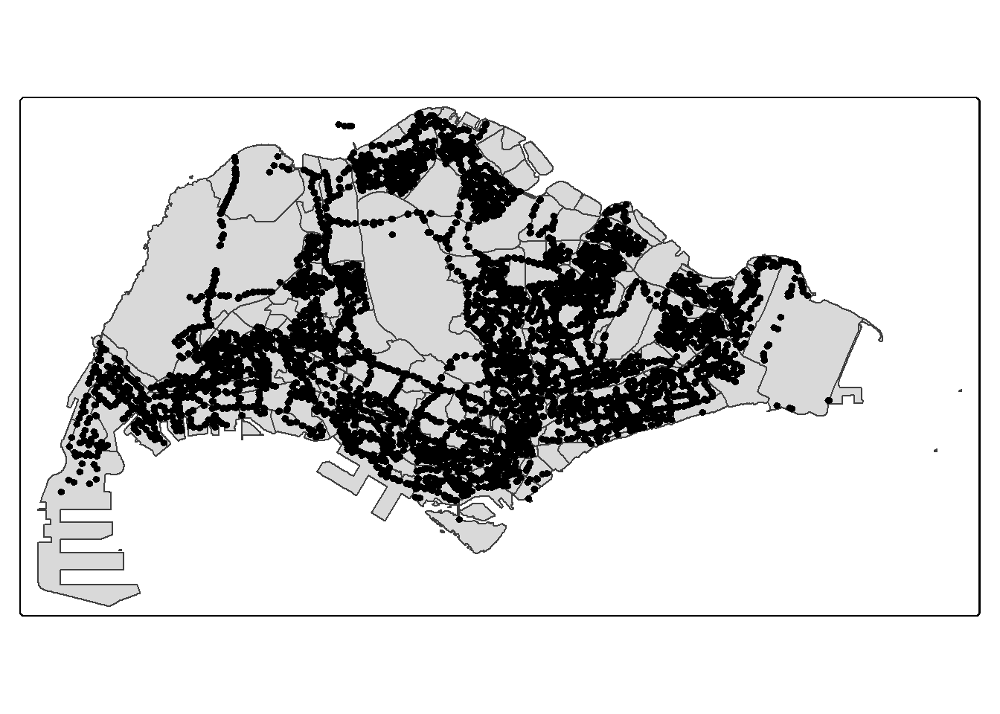

pacman::p_load(tidyverse, sf, sfdep, tmap, knitr, httr, rvest)In class Exercise 6 : Preparation of LTA Data Mall Data for Take-home Exercise 2
1 Loading the R packages
2 Importing Data
2.1 Bus Stop Location
As Bus Stop location data has crs = 9001, we standardise it into crs = 3414.
BusStop = st_read(dsn = "data/LTADataMall/",
layer = "BusStop") %>%
st_transform(crs = 3414)Reading layer `BusStop' from data source
`C:\privatejet\ShanmugaPriyaRajasekaran\ISSS626\In-class_Ex\In-class_Ex06\data\LTADataMall'
using driver `ESRI Shapefile'
Simple feature collection with 5172 features and 2 fields
Geometry type: POINT
Dimension: XY
Bounding box: xmin: 3970.122 ymin: 26482.1 xmax: 48285.52 ymax: 52983.82
Projected CRS: SVY212.2 Master Plan 2019 Subzone
mpsz_sf <- st_read("data/geospatial/MasterPlan2019SubzoneBoundaryNoSeaKML.kml") %>%
st_zm(drop = TRUE, what = "ZM") %>% st_transform(crs = 3414)Reading layer `URA_MP19_SUBZONE_NO_SEA_PL' from data source
`C:\privatejet\ShanmugaPriyaRajasekaran\ISSS626\In-class_Ex\In-class_Ex06\data\geospatial\MasterPlan2019SubzoneBoundaryNoSeaKML.kml'
using driver `KML'
Simple feature collection with 332 features and 2 fields
Geometry type: MULTIPOLYGON
Dimension: XY
Bounding box: xmin: 103.6057 ymin: 1.158699 xmax: 104.0885 ymax: 1.470775
Geodetic CRS: WGS 84extract_kml_field <- function(html_text, field_name) {
if (is.na(html_text) || html_text == "") return(NA_character_)
page <- read_html(html_text)
rows <- page %>% html_elements("tr")
value <- rows %>%
keep(~ html_text2(html_element(.x, "th")) == field_name) %>%
html_element("td") %>%
html_text2()
if (length(value) == 0) NA_character_ else value
}mpsz_sf <- mpsz_sf %>%
mutate(
REGION_N = map_chr(Description, extract_kml_field, "REGION_N"),
PLN_AREA_N = map_chr(Description, extract_kml_field, "PLN_AREA_N"),
SUBZONE_N = map_chr(Description, extract_kml_field, "SUBZONE_N"),
SUBZONE_C = map_chr(Description, extract_kml_field, "SUBZONE_C")
) %>%
select(-Name, -Description) %>%
relocate(geometry, .after = last_col())mpsz_cl <- mpsz_sf %>%
filter(SUBZONE_N != "SOUTHERN GROUP",
PLN_AREA_N != "WESTERN ISLANDS",
PLN_AREA_N != "NORTH-EASTERN ISLANDS")write_rds(mpsz_cl,
"data/rds/mpsz_cl.rds")2.3 O-D Bus Trips
odbus <- read_csv("data/LTADataMall/origin_destination_bus_202508.csv")3 Visualise the Busstops
We see some busstops outside the polygons. (Due to JB border)
tm_shape(mpsz_cl) +
tm_polygons() +
tm_shape(BusStop) +
tm_dots()
3.1 Extract Bus Stops within Singapore
We do not use left join as we only want to get bus stops within mpsz.
BusStop_in_SG <- st_join(
BusStop, mpsz_cl,
join = st_within,
left = FALSE)Plot the bus stop data again to check that the bus stops have been removed.
tm_shape(mpsz_cl) +
tm_polygons() +
tm_shape(BusStop_in_SG) +
tm_dots()4 Deriving Analytical Hexagon
hexagon <- st_make_grid(mpsz_cl,
cellsize = 700,
what = "polygon",
square = FALSE) %>%
st_sf()4.1 Filtering hexagons with bus stops
n_collisions counts the number of bus stops in each hexagon. Only retain hexagons with bus stops.
hexagon$n_collisions =
lengths(st_intersects(
hexagon, BusStop_in_SG))
hexagon <- filter(hexagon, n_collisions > 0)4.2 Assigning ids to each hexagon
Create id for each hexagon as previous hexagon table has no id.
hexagon <- hexagon %>%
select(,-n_collisions)
hexagon$HEX_ID <- sprintf(
"H%04d", seq_len(nrow(hexagon))) %>%
as.factor()
kable(head(hexagon))| geometry | HEX_ID |
|---|---|
| POLYGON ((3717.538 27712.72… | H0001 |
| POLYGON ((4417.538 30137.6,… | H0002 |
| POLYGON ((4767.538 28318.94… | H0003 |
| POLYGON ((4767.538 29531.38… | H0004 |
| POLYGON ((4767.538 30743.81… | H0005 |
| POLYGON ((4767.538 31956.25… | H0006 |
5 Preparing Trip Generation Data
Only interested in ORIGIN_PT_CODE (trip origin).
5.1 Cleaning the data
Remove unnecessary columns.
trips <- odbus %>%
select(c(ORIGIN_PT_CODE, DAY_TYPE, TIME_PER_HOUR, TOTAL_TRIPS)) %>%
rename(BUS_STOP_N = ORIGIN_PT_CODE) %>%
rename(HOUR_OF_DAY = TIME_PER_HOUR) %>%
rename(TRIPS = TOTAL_TRIPS)
trips$BUS_STOP_N <- as.factor(trips$BUS_STOP_N)
kable(head(trips))| BUS_STOP_N | DAY_TYPE | HOUR_OF_DAY | TRIPS |
|---|---|---|---|
| 84671 | WEEKENDS/HOLIDAY | 9 | 3 |
| 10099 | WEEKENDS/HOLIDAY | 13 | 31 |
| 64601 | WEEKENDS/HOLIDAY | 21 | 3 |
| 53009 | WEEKENDS/HOLIDAY | 16 | 10 |
| 80051 | WEEKENDS/HOLIDAY | 18 | 4 |
| 70031 | WEEKDAY | 14 | 1 |
5.2 Combining bus stop and hexagon layers
bs_hex <-st_intersection(
BusStop, hexagon) %>%
st_drop_geometry() %>%
select(c(BUS_STOP_N, HEX_ID))
kable(head(bs_hex))| BUS_STOP_N | HEX_ID | |
|---|---|---|
| 3092 | 25059 | H0001 |
| 241 | 26379 | H0002 |
| 2439 | 25751 | H0003 |
| 2554 | 25761 | H0003 |
| 2650 | 25719 | H0004 |
| 2651 | 25711 | H0004 |
5.3 Adding Hex_ID into bus trips data
trips <- inner_join(trips, bs_hex)
kable(head(trips))| BUS_STOP_N | DAY_TYPE | HOUR_OF_DAY | TRIPS | HEX_ID |
|---|---|---|---|---|
| 84671 | WEEKENDS/HOLIDAY | 9 | 3 | H0852 |
| 10099 | WEEKENDS/HOLIDAY | 13 | 31 | H0430 |
| 64601 | WEEKENDS/HOLIDAY | 21 | 3 | H0701 |
| 53009 | WEEKENDS/HOLIDAY | 16 | 10 | H0588 |
| 80051 | WEEKENDS/HOLIDAY | 18 | 4 | H0666 |
| 70031 | WEEKDAY | 14 | 1 | H0698 |